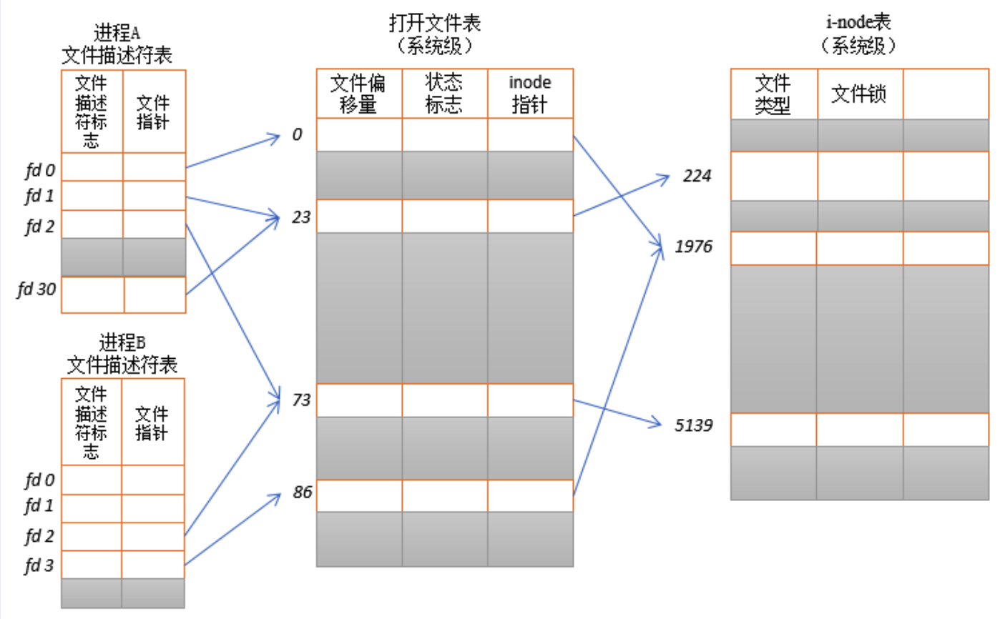

<!DOCTYPE html>
<html>
<head><meta name="generator" content="Hexo 3.9.0">
  <meta charset="utf-8">
  
  <title>细读《深入理解 Android 内核设计思想》（三）Binder 机制 [上] | what is your main focus for today?</title>
  <meta name="viewport" content="width=device-width, initial-scale=1, maximum-scale=1">
  <meta name="description" content="对冗余挑拣重点，对重点深入补充，输出结构清晰的精简版">
<meta name="keywords" content="读书笔记,binder,Linux driver,Service Manager">
<meta property="og:type" content="article">
<meta property="og:title" content="细读《深入理解 Android 内核设计思想》（三）Binder 机制 [上]">
<meta property="og:url" content="http://yhaowa.gitee.io/a7541469/index.html">
<meta property="og:site_name" content="what is your main focus for today?">
<meta property="og:description" content="对冗余挑拣重点，对重点深入补充，输出结构清晰的精简版">
<meta property="og:locale" content="zh-CN">
<meta property="og:image" content="http://yhaowa.gitee.io/img/fd.png">
<meta property="og:updated_time" content="2020-12-06T07:13:14.253Z">
<meta name="twitter:card" content="summary">
<meta name="twitter:title" content="细读《深入理解 Android 内核设计思想》（三）Binder 机制 [上]">
<meta name="twitter:description" content="对冗余挑拣重点，对重点深入补充，输出结构清晰的精简版">
<meta name="twitter:image" content="http://yhaowa.gitee.io/img/fd.png">
  
    <link rel="alternative" href="/atom.xml" title="what is your main focus for today?" type="application/atom+xml">
  
  
    <link rel="icon" href="/favicon.png">
  
  <link rel="stylesheet" href="/css/style.css">
  <!--[if lt IE 9]><script src="//cdnjs.cloudflare.com/ajax/libs/html5shiv/3.7/html5shiv.min.js"></script><![endif]-->
  
</head></html>
<body>
<div id="container">
  <div id="wrap">
    <header id="header">
  <div id="banner"></div>
  <div id="header-outer" class="outer">
    <div id="header-title" class="inner">
      <h1 id="logo-wrap">
        <a href="/" id="logo">what is your main focus for today?</a>
      </h1>
      
    </div>
    <div id="header-inner" class="inner">
      <nav id="main-nav">
        <a id="main-nav-toggle" class="nav-icon"></a>
        
          <a class="main-nav-link" href="/">首页</a>
        
          <a class="main-nav-link" href="/archives">归档</a>
        
      </nav>
      <nav id="sub-nav">
        
          <a id="nav-rss-link" class="nav-icon" href="/atom.xml" title="RSS Feed"></a>
        
        <a id="nav-search-btn" class="nav-icon" title="Search"></a>
      </nav>
      <div id="search-form-wrap">
        <form action="//www.baidu.com/baidu" method="get" accept-charset="utf-8" class="search-form">
          <input type="search" name="word" maxlength="20" class="search-form-input" placeholder="Search">
          <input type="submit" value="" class="search-form-submit">
          <input name=tn type=hidden value="bds">
          <input name=cl type=hidden value="3">
          <input name=ct type=hidden value="2097152">
          <input type="hidden" name="si" value="yhaowa.gitee.io">
        </form>
      </div>
    </div>
  </div>
</header>
    <div class="outer">
      <section id="main"><article id="post-细读《深入理解-Android-内核设计思想》（三）Binder-机制 上" class="article article-type-post" itemscope itemprop="blogPost">
  <div class="article-meta">
    <a href="/a7541469/" class="article-date">
  <time datetime="2020-04-12T09:58:51.000Z" itemprop="datePublished">2020-04-12</time>
</a>
    
  <div class="article-category">
    <a class="article-category-link" href="/categories/Framework/">Framework</a>
  </div>

  </div>
  <div class="article-inner">
    
    
      <header class="article-header">
        
  
    <h1 class="article-title" itemprop="name">
      细读《深入理解 Android 内核设计思想》（三）Binder 机制 [上]
    </h1>
  

      </header>
    
    <div class="article-entry" itemprop="articleBody">
      
        <p><em>对冗余挑拣重点，对重点深入补充，输出结构清晰的精简版</em><br><a id="more"></a></p>
<blockquote>
<ol>
<li>必备知识<ol>
<li>设备驱动</li>
<li>文件描述符</li>
<li>页框</li>
</ol>
</li>
<li>Binder 概述</li>
<li>binder 驱动<ol>
<li>binder_open</li>
<li>binder_mmap</li>
<li>binder_ioctl</li>
</ol>
</li>
<li>Service Manager<ol>
<li>启动</li>
<li>注册与查询</li>
</ol>
</li>
<li>最后</li>
</ol>
</blockquote>
<h2 id="必备知识"><a href="#必备知识" class="headerlink" title="必备知识"></a>必备知识</h2><h3 id="设备驱动"><a href="#设备驱动" class="headerlink" title="设备驱动"></a>设备驱动</h3><p>Linux 把所有的硬件访问都抽象为对文件的读写、设置，这一”抽象”的具体实现就是驱动程序。驱动程序充当硬件和软件之间的枢纽，提供了一套标准化的调用，并将这些调用映射为实际硬件设备相关的操作，对应用程序来说隐藏了设备工作的细节。  </p>
<p>Linux 设备分为三类，分别是字符设备、块设备和网络设备：</p>
<p><strong>1.字符设备：</strong> 能够像字节流（类似文件）一样被访问的设备。对字符设备进行读/写操作时，实际硬件的 I/O 操作一般也紧接着发生。字符设备驱动程序通常都会实现 open、close、read 和 write 系统调用，比如触摸屏、键盘、串口、LCD、LED 等。<br><strong>2.块设备：</strong> 指通过传输数据块（一般为 512 或 1k）来访问的设备，比如硬盘、SD卡、U盘、光盘等。<br><strong>3.网络设备：</strong> 能够和其他主机交换数据的设备，比如网卡设备、蓝牙设备等。</p>
<p>通过 cat /proc/devices 命令可以查看字符设备和块设备：<br><figure class="highlight objectivec"><table><tr><td class="gutter"><pre><span class="line">1</span><br><span class="line">2</span><br><span class="line">3</span><br><span class="line">4</span><br><span class="line">5</span><br><span class="line">6</span><br><span class="line">7</span><br><span class="line">8</span><br><span class="line">9</span><br><span class="line">10</span><br></pre></td><td class="code"><pre><span class="line">Character devices:</span><br><span class="line">  <span class="number">1</span> mem</span><br><span class="line">  <span class="number">4</span> ttyS</span><br><span class="line"> <span class="number">10</span> misc</span><br><span class="line">   ...</span><br><span class="line">Block devices:</span><br><span class="line">  <span class="number">1</span> ramdisk</span><br><span class="line">  <span class="number">7</span> loop</span><br><span class="line">  <span class="number">8</span> sd</span><br><span class="line">   ...</span><br></pre></td></tr></table></figure></p>
<p>可以看到属于字符设备的 misc 杂项设备，设备号为 10。通过  ls /dev -l 命令可以查看具体的注册设备：<br><figure class="highlight objectivec"><table><tr><td class="gutter"><pre><span class="line">1</span><br><span class="line">2</span><br><span class="line">3</span><br></pre></td><td class="code"><pre><span class="line">crw-rw-rw- <span class="number">1</span> root   root    <span class="number">10</span>,  <span class="number">61</span> <span class="number">2020</span><span class="number">-03</span><span class="number">-16</span> <span class="number">16</span>:<span class="number">52</span> ashmem</span><br><span class="line">crw-rw-rw- <span class="number">1</span> root   root    <span class="number">10</span>,  <span class="number">58</span> <span class="number">2020</span><span class="number">-03</span><span class="number">-16</span> <span class="number">16</span>:<span class="number">52</span> binder</span><br><span class="line">...</span><br></pre></td></tr></table></figure></p>
<p>其中 Ashmem、Binder 的设备号是 10，都属于 misc 杂项设备，10 是 <strong>主设备号</strong>，61、58 叫做 <strong>从设备号</strong>，有了主、从设备号，就可以唯一标识一个设备。</p>
<h3 id="文件描述符"><a href="#文件描述符" class="headerlink" title="文件描述符"></a>文件描述符</h3><p>Linux 中一切都可以看作文件，包括普通文件、链接文件、Socket 以及设备驱动等，对其进行相关操作时，都可能会创建对应的文件描述符。文件描述符（file descriptor）是内核为了高效管理已被打开的文件所创建的索引，用于指代被打开的文件，对文件所有 I/O 操作相关的系统调用都需要通过文件描述符。</p>
<p>文件描述符与文件是什么关系呢？下图 Linux 中的三张表可以体现：<br></p>
<ul>
<li><p><strong>进程级别的文件描述符表</strong>：内核为每个进程维护一个文件描述符表，该表记录了文件描述符的相关信息，包括文件描述符、指向打开文件表中记录的指针。</p>
</li>
<li><p><strong>系统级别的打开文件表</strong>：内核对所有打开文件维护的一个进程共享的打开文件描述表，表中存储了处于打开状态文件的相关信息，包括文件类型、访问权限、文件操作函数(file_operations)等。</p>
</li>
<li><p><strong>系统级别的 i-node 表</strong>：i-node 结构体记录了文件相关的信息，包括文件长度，文件所在设备，文件物理位置，创建、修改和更新时间等，”ls -i” 命令可以查看文件 i-node 节点</p>
</li>
</ul>
<p>文件描述符是一种系统资源，可以通过以下命令来查看文件描述符的上限：<br><figure class="highlight shell"><figcaption><span>script</span></figcaption><table><tr><td class="gutter"><pre><span class="line">1</span><br><span class="line">2</span><br><span class="line">3</span><br><span class="line">4</span><br><span class="line">5</span><br><span class="line">6</span><br><span class="line">7</span><br><span class="line">8</span><br><span class="line">9</span><br><span class="line">10</span><br><span class="line">11</span><br></pre></td><td class="code"><pre><span class="line"><span class="meta">#</span><span class="bash">查看所有进程允许打开的最大 fd 数量</span></span><br><span class="line">126|generic_x86:/ # cat /proc/sys/fs/file-max</span><br><span class="line">174139</span><br><span class="line"></span><br><span class="line"><span class="meta">#</span><span class="bash">查看所有进程已经打开的 fd 数量以及允许的最大数量</span></span><br><span class="line">generic_x86:/ # cat /proc/sys/fs/file-nr</span><br><span class="line">11040   0       174139</span><br><span class="line"></span><br><span class="line"><span class="meta">#</span><span class="bash">查看单个进程允许打开的最大 fd 数量.</span></span><br><span class="line">generic_x86:/ # ulimit -n</span><br><span class="line">32768</span><br></pre></td></tr></table></figure></p>
<p>也可以查看某进程当前已使用的 fd ：<br><figure class="highlight shell"><figcaption><span>script</span></figcaption><table><tr><td class="gutter"><pre><span class="line">1</span><br><span class="line">2</span><br><span class="line">3</span><br><span class="line">4</span><br><span class="line">5</span><br><span class="line">6</span><br><span class="line">7</span><br><span class="line">8</span><br><span class="line">9</span><br><span class="line">10</span><br></pre></td><td class="code"><pre><span class="line"><span class="meta">#</span><span class="bash">查看某进程（进程 id 为 15077）已经打开的 fd</span></span><br><span class="line">generic_x86:/ # ls -l /proc/15077/fd/</span><br><span class="line">total 0</span><br><span class="line">lrwx------ 1 u0_a136 u0_a136 64 2020-04-15 23:04 0 -&gt; /dev/null</span><br><span class="line">lrwx------ 1 u0_a136 u0_a136 64 2020-04-15 23:04 1 -&gt; /dev/null</span><br><span class="line">lrwx------ 1 u0_a136 u0_a136 64 2020-04-15 23:04 35 -&gt; /dev/binder</span><br><span class="line">lrwx------ 1 u0_a136 u0_a136 64 2020-04-09 01:01 44 -&gt; socket:[780404]</span><br><span class="line">lrwx------ 1 u0_a136 u0_a136 64 2020-04-15 23:04 55 -&gt; /dev/ashmem</span><br><span class="line">lrwx------ 1 u0_a136 u0_a136 64 2020-04-15 23:04 60 -&gt; /dev/ashmem</span><br><span class="line">...</span><br></pre></td></tr></table></figure></p>
<p>上面这个进程是一个 Android 应用进程，所以能看到 ashmem、binder 等 Android 特有设备文件相关的 fd 。再来看一个实际打开磁盘文件的例子：<br><figure class="highlight java"><table><tr><td class="gutter"><pre><span class="line">1</span><br><span class="line">2</span><br></pre></td><td class="code"><pre><span class="line">File file = <span class="keyword">new</span> File(getCacheDir(), <span class="string">"testFdFile"</span>);</span><br><span class="line">FileOutputStream out = <span class="keyword">new</span> FileOutputStream(file);</span><br></pre></td></tr></table></figure></p>
<p>执行上面代码后会申请一个对应的 fd：<br><figure class="highlight shell"><figcaption><span>script</span></figcaption><table><tr><td class="gutter"><pre><span class="line">1</span><br><span class="line">2</span><br><span class="line">3</span><br><span class="line">4</span><br></pre></td><td class="code"><pre><span class="line"><span class="meta">#</span><span class="bash"> ls -l /proc/&#123;pid&#125;/fd/</span></span><br><span class="line">...</span><br><span class="line">l-wx------ u0_a55   u0_a55  2020-04-16 00:24 995 -&gt; /data/data/com.example.test/cache/testFdFile</span><br><span class="line">...</span><br></pre></td></tr></table></figure></p>
<p>实际开发中，可能会遇到 fd 资源超过上限导致的 “Too many open files” 之类的问题，一般都是因为没有及时释放掉 fd，比如上面代码中 FileOutputStream 没有关闭，若循环执行超过单个进程允许打开的最大 fd 数量，程序就会出现异常。</p>
<h3 id="页框"><a href="#页框" class="headerlink" title="页框"></a>页框</h3><p>页框（Page Frame）是指一块实际的物理内存块，页是指程序的一块内存数据单元。内存数据一定是存储在实际的物理内存上，即页必然对应于一个页框，页数据实际是存储在页框上的。</p>
<p>页框和页一样大，都是内核对内存的分块单位。一个页框可以映射给多个页，也就是说一块实际的物理存储空间可以映射给多个进程的多个虚拟内存空间，这也是 mmap 机制依赖的基础规则。</p>
<h2 id="Binder-概述"><a href="#Binder-概述" class="headerlink" title="Binder 概述"></a>Binder 概述</h2><p>不同进程处于不同的内存空间，具有不同的虚拟地址映射规则，所以不能直接通信。 Binder 是 Android 中使用最广泛的 IPC 机制，正因为有了 Binder，Android 系统中形形色色的进程与组件才能真正统一成有机的整体。Binder 通信机制与 TCP/IP 有共通之处，其组成元素可以这样来类比：</p>
<ul>
<li>binder 驱动  -&gt;  路由器</li>
<li>Service Manager  -&gt; DNS</li>
<li>Binder Client  -&gt;  客户端</li>
<li>Binder Server  -&gt;  服务器</li>
</ul>
<p>Binder 的本质目标就是客户端要与服务器通信，但由于是不同的进程，必须通过 binder 驱动（路由器）把请求正确投递到对方进程中，所以通信的进程需要持有一个唯一的 Binder 标志（IP 地址）。</p>
<p>而 Binder 标志可能是会动态更新的 “IP 地址”，对通信进程来说获取难度较大且可读性差，这就需要一个 Service Manager（DNS）来解决这个问题。但 Service Manager 自身也是一个 Binder Server（服务器），怎么找到它的 “IP 地址”呢？Binder 机制对此做了特别规定：Service Manager 在 Binder 通信过程中的唯一标志永远是 0。</p>
<h2 id="binder-驱动"><a href="#binder-驱动" class="headerlink" title="binder 驱动"></a>binder 驱动</h2><p>binder 驱动运行在内核态，向上层提供 /dev/binder 设备节点，并不对应真实的硬件设备。binder 驱动的注册逻辑在 Binder.c 中：<br><figure class="highlight objectivec"><table><tr><td class="gutter"><pre><span class="line">1</span><br><span class="line">2</span><br><span class="line">3</span><br><span class="line">4</span><br><span class="line">5</span><br></pre></td><td class="code"><pre><span class="line"><span class="comment">//drivers/staging/android/Binder.c</span></span><br><span class="line"><span class="keyword">static</span> init __init binder_init(<span class="keyword">void</span>)&#123;</span><br><span class="line">    ...</span><br><span class="line">    ret = misc_register(&amp;binder_miscdev); <span class="comment">//注册为 misc 驱动</span></span><br><span class="line">&#125;</span><br></pre></td></tr></table></figure></p>
<p>binder_miscdev 即 Binder 设备描述如下：<br><figure class="highlight objectivec"><table><tr><td class="gutter"><pre><span class="line">1</span><br><span class="line">2</span><br><span class="line">3</span><br><span class="line">4</span><br><span class="line">5</span><br></pre></td><td class="code"><pre><span class="line"><span class="keyword">static</span> <span class="keyword">struct</span> miscdevice binder_miscdev = &#123;</span><br><span class="line">    .minor = MISC_DYNAMIC_MINOR, <span class="comment">//自动分配次设备号</span></span><br><span class="line">    .name = <span class="string">"binder"</span>, <span class="comment">//驱动名称</span></span><br><span class="line">    .fops = &amp;binder_fops <span class="comment">//binder 驱动支持的文件操作</span></span><br><span class="line">&#125;</span><br></pre></td></tr></table></figure></p>
<p>binder_fops 为 Binder 设备支持的操作函数，如下：<br><figure class="highlight objectivec"><table><tr><td class="gutter"><pre><span class="line">1</span><br><span class="line">2</span><br><span class="line">3</span><br><span class="line">4</span><br><span class="line">5</span><br><span class="line">6</span><br><span class="line">7</span><br><span class="line">8</span><br><span class="line">9</span><br></pre></td><td class="code"><pre><span class="line"><span class="keyword">static</span> <span class="keyword">const</span> <span class="keyword">struct</span> file_operations binder_fops = &#123;</span><br><span class="line">    .owner = THIS_MODULE,</span><br><span class="line">    .poll = binder_poll,</span><br><span class="line">    .unlocked_ioctl = binder_ioctl,</span><br><span class="line">    .mmap = binder_mmap,</span><br><span class="line">    .open = binder_open,</span><br><span class="line">    .flush = binder_flush,</span><br><span class="line">    .release = binder_release,</span><br><span class="line">&#125;;</span><br></pre></td></tr></table></figure></p>
<p>与 Ashmem 设备类似，最关键的是 binder_open()、binder_mmap()、binder_ioctl()，下面分别介绍这三个函数。</p>
<h3 id="binder-open"><a href="#binder-open" class="headerlink" title="binder_open"></a>binder_open</h3><p>用户应用程序通过 Binder 通信时，需先调用 binder_open() 方法打开 binder 驱动，binder_open() 中主要做了两个工作，对应的分为两部分来看：<br><figure class="highlight objectivec"><table><tr><td class="gutter"><pre><span class="line">1</span><br><span class="line">2</span><br><span class="line">3</span><br><span class="line">4</span><br><span class="line">5</span><br><span class="line">6</span><br><span class="line">7</span><br><span class="line">8</span><br><span class="line">9</span><br><span class="line">10</span><br><span class="line">11</span><br><span class="line">12</span><br><span class="line">13</span><br></pre></td><td class="code"><pre><span class="line"><span class="comment">//binder.c</span></span><br><span class="line"><span class="keyword">static</span> <span class="keyword">int</span> binder_open(<span class="keyword">struct</span> inode *nodp, <span class="keyword">struct</span> file *filp)</span><br><span class="line">&#123;</span><br><span class="line">    <span class="keyword">struct</span> binder_proc *proc;</span><br><span class="line">    ...</span><br><span class="line">    proc = kzalloc(<span class="keyword">sizeof</span>(*proc), GFP_KERNEL); <span class="comment">//创建 binder_proc</span></span><br><span class="line">    <span class="keyword">if</span> (proc == <span class="literal">NULL</span>)</span><br><span class="line">        <span class="keyword">return</span> -ENOMEM;</span><br><span class="line">    get_task_struct(current);</span><br><span class="line">    proc-&gt;tsk = current;</span><br><span class="line">    INIT_LIST_HEAD(&amp;proc-&gt;todo); <span class="comment">//初始化 todo 队列</span></span><br><span class="line">    init_waitqueue_head(&amp;proc-&gt;wait); <span class="comment">//初始化 todo 队列</span></span><br><span class="line">    proc-&gt;default_priority = task_nice(current);</span><br></pre></td></tr></table></figure></p>
<p>上面代码的主要工作是 <strong>创建及初始化 binder_proc</strong>，binder_proc 就是用来存放 binder 相关数据的结构体，每个进程独有一份。</p>
<figure class="highlight objectivec"><table><tr><td class="gutter"><pre><span class="line">1</span><br><span class="line">2</span><br><span class="line">3</span><br><span class="line">4</span><br><span class="line">5</span><br><span class="line">6</span><br><span class="line">7</span><br><span class="line">8</span><br><span class="line">9</span><br></pre></td><td class="code"><pre><span class="line">    binder_lock(__func__);</span><br><span class="line">    binder_stats_created(BINDER_STAT_PROC);</span><br><span class="line">    hlist_add_head(&amp;proc-&gt;proc_node, &amp;binder_procs);</span><br><span class="line">    proc-&gt;pid = current-&gt;group_leader-&gt;pid;</span><br><span class="line">    INIT_LIST_HEAD(&amp;proc-&gt;delivered_death);</span><br><span class="line">    filp-&gt;private_data = proc;</span><br><span class="line">    binder_unlock(__func__);</span><br><span class="line">    ...</span><br><span class="line">&#125;</span><br></pre></td></tr></table></figure>
<p>第二个主要工作是 <strong>将 binder_proc 记录起来</strong>，方便后续使用，如上代码所示，通过 hlist_add_head() 方法将 binder_proc 记录到了内核的 binder_procs 表中，另外还将 binder_proc 存放在 filp 的 private_data 域，以便于在后续调用 mmap、ioctl 等方法时获取。</p>
<h3 id="binder-mmap"><a href="#binder-mmap" class="headerlink" title="binder_mmap"></a>binder_mmap</h3><p>对于 binder 驱动来说，上层应用调用的 mmap() 最终会执行到 binder_mmap() 方法，binder_mmap() 的主要工作是<strong>将上层应用的虚拟内存块和 Binder 申请的物理内存块建立映射</strong>，应用程序和 Binder 就拥有了共享的内存空间，这样不同的应用程序之间可以通过 Binder 实现数据共享。举个例子：</p>
<ul>
<li>Binder 中有一物理内存块 P；A 进程中有一内存块 a ；B 进程中有一内存块 b</li>
<li>将 P 分别与 a、b 建立映射，这样 a、b 就可以看作同一块内存</li>
<li>若 A 进程想要发送数据给 B 进程，只需将数据拷贝到 a 内存，B 进程就能直接读取到了</li>
</ul>
<p>所以 Binder 只需一次拷贝，binder_mmap() 要做的就是将 P 与 a 建立映射，该方法代码较长，分段看关键部分代码：</p>
<figure class="highlight objectivec"><table><tr><td class="gutter"><pre><span class="line">1</span><br><span class="line">2</span><br><span class="line">3</span><br><span class="line">4</span><br><span class="line">5</span><br><span class="line">6</span><br><span class="line">7</span><br><span class="line">8</span><br><span class="line">9</span><br><span class="line">10</span><br><span class="line">11</span><br><span class="line">12</span><br><span class="line">13</span><br><span class="line">14</span><br></pre></td><td class="code"><pre><span class="line"><span class="keyword">static</span> <span class="keyword">int</span> binder_mmap(<span class="keyword">struct</span> file *filp, <span class="keyword">struct</span> vm_area_struct *vma)&#123;</span><br><span class="line">    <span class="keyword">struct</span> vm_struct *area;</span><br><span class="line">    <span class="keyword">struct</span> binder_proc *proc = filp-&gt;private_data;</span><br><span class="line">    <span class="keyword">const</span> <span class="keyword">char</span> *failure_string;</span><br><span class="line">    <span class="keyword">struct</span> binder_buffer *buffer;</span><br><span class="line">    <span class="comment">//映射空间至多 4M</span></span><br><span class="line">    <span class="keyword">if</span> ((vma-&gt;vm_end - vma-&gt;vm_start) &gt; SZ_4M)</span><br><span class="line">          vma-&gt;vm_end = vma-&gt;vm_start + SZ_4M;</span><br><span class="line">    <span class="comment">//检查 vma 是否被禁用</span></span><br><span class="line">    <span class="keyword">if</span> (vma-&gt;vm_flags &amp; FORBIDDEN_MMAP_FLAGS) &#123;</span><br><span class="line">          ret = -EPERM;</span><br><span class="line">          failure_string = <span class="string">"bad vm_flags"</span>;</span><br><span class="line">          <span class="keyword">goto</span> err_bad_arg;</span><br><span class="line">    &#125;</span><br></pre></td></tr></table></figure>
<ul>
<li>vma(vm_area_struct) 是<strong>用户态虚拟内存地址空间</strong>，也就是 a</li>
<li>area(vm_struct) 是<strong>内核态虚拟地址空间</strong>，指向 P</li>
<li>proc(binder_proc) 即 binder_open() 中创建的、存放 binder 相关数据的结构体</li>
<li>另外还做了限制映射空间至多 4M 等映射规则的检查和处理</li>
</ul>
<figure class="highlight objectivec"><table><tr><td class="gutter"><pre><span class="line">1</span><br><span class="line">2</span><br><span class="line">3</span><br><span class="line">4</span><br><span class="line">5</span><br><span class="line">6</span><br><span class="line">7</span><br><span class="line">8</span><br><span class="line">9</span><br><span class="line">10</span><br><span class="line">11</span><br><span class="line">12</span><br><span class="line">13</span><br><span class="line">14</span><br><span class="line">15</span><br><span class="line">16</span><br><span class="line">17</span><br><span class="line">18</span><br><span class="line">19</span><br></pre></td><td class="code"><pre><span class="line"> mutex_lock(&amp;binder_mmap_lock);</span><br><span class="line"><span class="comment">//检查是否已执行过 binder_mmap 映射过</span></span><br><span class="line"><span class="keyword">if</span> (proc-&gt;buffer) &#123; </span><br><span class="line">      ret = -EBUSY;</span><br><span class="line">      failure_string = <span class="string">"already mapped"</span>;</span><br><span class="line">      <span class="keyword">goto</span> err_already_mapped;</span><br><span class="line">&#125;</span><br><span class="line"><span class="comment">//申请内核虚拟内存地址空间</span></span><br><span class="line">area = get_vm_area(vma-&gt;vm_end - vma-&gt;vm_start, VM_IOREMAP);</span><br><span class="line"><span class="keyword">if</span> (area == <span class="literal">NULL</span>) &#123;</span><br><span class="line">      ret = -ENOMEM;</span><br><span class="line">      failure_string = <span class="string">"get_vm_area"</span>;</span><br><span class="line">      <span class="keyword">goto</span> err_get_vm_area_failed;</span><br><span class="line">&#125;</span><br><span class="line"><span class="comment">//将内核虚拟内存地址记录在 proc 中 </span></span><br><span class="line">proc-&gt;buffer = area-&gt;addr;</span><br><span class="line"><span class="comment">//记录用户态虚拟内存地址和内核态虚拟内存地址的偏移量</span></span><br><span class="line">proc-&gt;user_buffer_offset = vma-&gt;vm_start - (uintptr_t)proc-&gt;buffer;</span><br><span class="line">mutex_unlock(&amp;binder_mmap_lock);</span><br></pre></td></tr></table></figure>
<ul>
<li>proc-&gt;buffer 用于存储最终映射的内核态虚拟地址，并通过此变量控制只能映射一次</li>
<li>get_vm_area() 方法申请了与用户态空间大小一致的内核态虚拟地址空间，注意此时还没分配实际的物理内存</li>
<li>proc-&gt;user_buffer_offset 记录了用户态虚拟内存和内核态虚拟内存地址的偏移量，这样后续方便获取用户态虚拟内存地址</li>
</ul>
<figure class="highlight objectivec"><table><tr><td class="gutter"><pre><span class="line">1</span><br><span class="line">2</span><br><span class="line">3</span><br><span class="line">4</span><br><span class="line">5</span><br><span class="line">6</span><br><span class="line">7</span><br><span class="line">8</span><br><span class="line">9</span><br><span class="line">10</span><br><span class="line">11</span><br><span class="line">12</span><br><span class="line">13</span><br><span class="line">14</span><br><span class="line">15</span><br><span class="line">16</span><br><span class="line">17</span><br></pre></td><td class="code"><pre><span class="line"><span class="comment">//分配存放物理页地址的数组</span></span><br><span class="line">proc-&gt;pages = kzalloc(<span class="keyword">sizeof</span>(proc-&gt;pages[<span class="number">0</span>]) * ((vma-&gt;vm_end - vma-&gt;vm_start) / PAGE_SIZE), GFP_KERNEL);</span><br><span class="line">proc-&gt;buffer_size = vma-&gt;vm_end - vma-&gt;vm_start;</span><br><span class="line"><span class="comment">//申请一页物理内存</span></span><br><span class="line"><span class="keyword">if</span> (binder_update_page_range(proc, <span class="number">1</span>, proc-&gt;buffer, proc-&gt;buffer + PAGE_SIZE, vma)) &#123;</span><br><span class="line">      ret = -ENOMEM;</span><br><span class="line">      failure_string = <span class="string">"alloc small buf"</span>;</span><br><span class="line">      <span class="keyword">goto</span> err_alloc_small_buf_failed;</span><br><span class="line">&#125;</span><br><span class="line"><span class="comment">//最后的收尾工作：将内存记录到相应链表中，设置状态等</span></span><br><span class="line">INIT_LIST_HEAD(&amp;proc-&gt;buffers);</span><br><span class="line">list_add(&amp;buffer-&gt;entry, &amp;proc-&gt;buffers);</span><br><span class="line">buffer-&gt;free = <span class="number">1</span>;</span><br><span class="line">binder_insert_free_buffer(proc, buffer);</span><br><span class="line">proc-&gt;free_async_space = proc-&gt;buffer_size / <span class="number">2</span>;</span><br><span class="line">proc-&gt;files = get_files_struct(current);</span><br><span class="line">proc-&gt;vma = vma;</span><br></pre></td></tr></table></figure>
<ul>
<li>proc-&gt;pages 是一个二维指针，用于存放管理物理页面</li>
<li>binder_update_page_range() 方法真正的申请物理页面，并分别映射到内核态和用户态的虚拟内存地址空间</li>
</ul>
<p>至此 binder_mmap 方法执行结束，书中并没有对 <strong>binder_update_page_range()</strong> 方法具体展开介绍，但个人认为此方法代码非常有助于我们理解页框以及与虚拟内存地址的映射逻辑，所以继续分析，先了解此方法的参数：</p>
<ul>
<li>proc：申请内存的进程所持有的 binder_proc 对象</li>
<li>allocate：1 表示申请内存，0 表示释放内存</li>
<li>start：虚拟内存地址起点</li>
<li>end：虚拟内存地址终点</li>
<li>vma：用户态虚拟内存地址空间</li>
</ul>
<figure class="highlight objectivec"><table><tr><td class="gutter"><pre><span class="line">1</span><br><span class="line">2</span><br><span class="line">3</span><br><span class="line">4</span><br><span class="line">5</span><br><span class="line">6</span><br><span class="line">7</span><br><span class="line">8</span><br><span class="line">9</span><br><span class="line">10</span><br><span class="line">11</span><br><span class="line">12</span><br><span class="line">13</span><br><span class="line">14</span><br><span class="line">15</span><br><span class="line">16</span><br><span class="line">17</span><br></pre></td><td class="code"><pre><span class="line"><span class="keyword">static</span> <span class="keyword">int</span> binder_update_page_range(<span class="keyword">struct</span> binder_proc *proc, <span class="keyword">int</span> allocate,</span><br><span class="line">                    <span class="keyword">void</span> *start, <span class="keyword">void</span> *end,</span><br><span class="line">                    <span class="keyword">struct</span> vm_area_struct *vma)&#123;</span><br><span class="line">    <span class="keyword">if</span> (allocate == <span class="number">0</span>)  <span class="comment">//区分是申请还是释放</span></span><br><span class="line">         <span class="keyword">goto</span> free_range;</span><br><span class="line">    <span class="comment">//依据 start、end 循环分配物理页</span></span><br><span class="line">    <span class="keyword">for</span> (page_addr = start; page_addr &lt; end; page_addr += PAGE_SIZE) &#123;</span><br><span class="line">          <span class="comment">//每次分配 1 个页框*/</span></span><br><span class="line">         *page = **alloc_page**(GFP_KERNEL | __GFP_HIGHMEM | __GFP_ZERO);</span><br><span class="line">         <span class="comment">//将页框映射到内核态虚拟内存地址</span></span><br><span class="line">         ret = **map_kernel_range_noflush**((<span class="keyword">unsigned</span> <span class="keyword">long</span>)page_addr, PAGE_SIZE, PAGE_KERNEL, page);</span><br><span class="line">         <span class="comment">//根据 binder_mmap 方法中记录的偏移量计算出用户态虚拟内存地址</span></span><br><span class="line">         user_page_addr = (uintptr_t)page_addr + proc-&gt;user_buffer_offset;</span><br><span class="line">         <span class="comment">//将页框映射到用户态虚拟内存地址</span></span><br><span class="line">         ret = vm_insert_page(vma, user_page_addr, page[<span class="number">0</span>]);</span><br><span class="line">     &#125;</span><br><span class="line">     <span class="keyword">return</span> <span class="number">0</span>;</span><br></pre></td></tr></table></figure>
<p>binder_mmap() 的 allocate 参数传入 1 为申请内存，执行上面的代码。若为释放则执行以下代码：<br><figure class="highlight objectivec"><table><tr><td class="gutter"><pre><span class="line">1</span><br><span class="line">2</span><br><span class="line">3</span><br><span class="line">4</span><br><span class="line">5</span><br><span class="line">6</span><br><span class="line">7</span><br><span class="line">8</span><br><span class="line">9</span><br><span class="line">10</span><br><span class="line">11</span><br><span class="line">12</span><br><span class="line">13</span><br><span class="line">14</span><br><span class="line">15</span><br></pre></td><td class="code"><pre><span class="line">free_range:</span><br><span class="line">    <span class="comment">//依据 start、end 从后往前遍历</span></span><br><span class="line">    <span class="keyword">for</span> (page_addr = end - PAGE_SIZE; page_addr &gt;= start; page_addr -= PAGE_SIZE) &#123;</span><br><span class="line">        page = &amp;proc-&gt;pages[(page_addr - proc-&gt;buffer) / PAGE_SIZE];</span><br><span class="line">        <span class="keyword">if</span> (vma)</span><br><span class="line">            <span class="comment">//解除用户态虚拟地址和物理页框的映射</span></span><br><span class="line">            zap_page_range(vma, (uintptr_t)page_addr + proc-&gt;user_buffer_offset, PAGE_SIZE, <span class="literal">NULL</span>);</span><br><span class="line">err_vm_insert_page_failed:</span><br><span class="line">        <span class="comment">//解除内核态虚拟地址和物理页框的映射</span></span><br><span class="line">        unmap_kernel_range((<span class="keyword">unsigned</span> <span class="keyword">long</span>)page_addr, PAGE_SIZE);</span><br><span class="line">err_map_kernel_failed:</span><br><span class="line">        <span class="comment">//释放页框物理内存</span></span><br><span class="line">        __free_page(*page);</span><br><span class="line">        *page = <span class="literal">NULL</span>;</span><br><span class="line">&#125;</span><br></pre></td></tr></table></figure></p>
<h3 id="binder-ioctl"><a href="#binder-ioctl" class="headerlink" title="binder_ioctl"></a>binder_ioctl</h3><p>binder 驱动并不提供常规的 read()、write() 等文件操作，全部通过 binder_ioctl() 实现，所以 binder_ioctl() 是 binder 驱动中工作量最大的一个，它承担了 binder 驱动的大部分业务。这里不深入分析源码，只列出 binder_ioctl() 支持的命令列表：</p>
<table>
<thead>
<tr>
<th>命令</th>
<th>说明</th>
</tr>
</thead>
<tbody>
<tr>
<td>BINDER_WRITE_READ</td>
<td>向 binder 驱动写入或读取数据</td>
</tr>
<tr>
<td>BINDER_SET_MAX_THREADS</td>
<td>设置支持的最大线程数</td>
</tr>
<tr>
<td>BINDER_SET_CONTEXT_MGR</td>
<td>Service Manager 专用的注册命令</td>
</tr>
<tr>
<td>BINDER_THREAD_EXIT</td>
<td>通知 binder 驱动某线程退出，释放相应资源</td>
</tr>
<tr>
<td>BINDER_VERSION</td>
<td>获取 Binder 版本号</td>
</tr>
</tbody>
</table>
<p>其中 BINDER_WRITE_READ 最为关键，分为若干子命令：</p>
<table>
<thead>
<tr>
<th>命令</th>
<th>说明</th>
</tr>
</thead>
<tbody>
<tr>
<td>BC_INCREFS、BC_ACQUIRE、BC_RELEASE、BC_DECREFS</td>
<td>管理 binder_ref 的引用计数</td>
</tr>
<tr>
<td>BC_INCREFS_DONE、BC_ACQUIRE_NODE</td>
<td>管理 binder_node 的引用计数</td>
</tr>
<tr>
<td>BC_FREE_BUFFER</td>
<td>释放 Binder 内存缓冲区</td>
</tr>
<tr>
<td>BC_TRANSACTION</td>
<td>向 binder 驱动发送通信数据(主动调用)</td>
</tr>
<tr>
<td>BC_REPLY</td>
<td>向 binder 驱动发送通信数据(返回结果)</td>
</tr>
<tr>
<td>BC_REGISTER_LOOPER、BC_ENTER_LOOPER、BC_EXIT_LOOPER</td>
<td>设置 Binder looper 状态</td>
</tr>
<tr>
<td>BC_REQUEST_DEATH_NOTIFICATION</td>
<td>注册 Binder 死亡通知</td>
</tr>
<tr>
<td>BC_CLEAR_DEATH_NOTIFICATION</td>
<td>清除 Binder 死亡通知</td>
</tr>
<tr>
<td>BC_DEAD_BINDER_DONE</td>
<td>告知 Binder 已处理完 Binder 死亡通知</td>
</tr>
</tbody>
</table>
<p>以上均为 binder 驱动作为接收方 binder_ioctl() 方法接收的命令，还有一些与之对应的 BR_ 开头的命令，由 binder 驱动主动发出，比如 BR_TRANSACTION、BR_REPLY，在一次 IPC 调用中是这样应用的：</p>
<div id="sequence-0"></div>

<h2 id="Service-Manager"><a href="#Service-Manager" class="headerlink" title="Service Manager"></a>Service Manager</h2><p>Service Manager 是为了完成 Binder Server Name（域名）和 Service Handle（IP 地址）之间对应关系的查询而存在的，可以推测它主要包含的功能：<br><strong>注册</strong>：当一个 Binder Server 创建后，应该将这个 Server 的 name 和 Handle 对应关系记录到 Service Manager 中<br><strong>查询</strong>：其他应用可以根据 Server 的 name 查询到对应的 Service Handle</p>
<h3 id="启动"><a href="#启动" class="headerlink" title="启动"></a>启动</h3><p>Android 系统第一个启动的 init 进程解析 init.rc 脚本时构建出系统的初始运行状态，Android 系统服务程序大多是在这个脚本中描述并被相继启动的，包括 zygote、mediaserver、surfaceflinger 以及 servicemanager 等，其中 servicemanager 描述如下：<br><figure class="highlight objectivec"><table><tr><td class="gutter"><pre><span class="line">1</span><br><span class="line">2</span><br><span class="line">3</span><br><span class="line">4</span><br><span class="line">5</span><br><span class="line">6</span><br><span class="line">7</span><br><span class="line">8</span><br><span class="line">9</span><br><span class="line">10</span><br><span class="line">11</span><br></pre></td><td class="code"><pre><span class="line"><span class="meta">#init.rc</span></span><br><span class="line">service servicemanager /system/bin/servicemanager</span><br><span class="line">    <span class="keyword">class</span> core</span><br><span class="line">    user system</span><br><span class="line">    group system</span><br><span class="line">    critical</span><br><span class="line">    onrestart restart healthd</span><br><span class="line">    onrestart restart zygote</span><br><span class="line">    onrestart restart media</span><br><span class="line">    onrestart restart surfaceflinger</span><br><span class="line">    onrestart restart drm</span><br></pre></td></tr></table></figure></p>
<p>可以看到，当 servicemanager 发生问题重启时，其他 healthd、zygote、media 等服务也会被重启。servicemanager 服务启动后执行 service_manager.c 的 main 函数，关键代码如下：<br><figure class="highlight objectivec"><table><tr><td class="gutter"><pre><span class="line">1</span><br><span class="line">2</span><br><span class="line">3</span><br><span class="line">4</span><br><span class="line">5</span><br><span class="line">6</span><br><span class="line">7</span><br><span class="line">8</span><br><span class="line">9</span><br><span class="line">10</span><br><span class="line">11</span><br><span class="line">12</span><br></pre></td><td class="code"><pre><span class="line"><span class="comment">//frameworks/native/cmds/servicemanager/service_manager.c</span></span><br><span class="line"><span class="keyword">int</span> main()&#123;</span><br><span class="line">    <span class="keyword">struct</span> binder_state *bs;</span><br><span class="line">    bs = binder_open(<span class="number">128</span>*<span class="number">1024</span>);</span><br><span class="line">    <span class="keyword">if</span> (binder_become_context_manager(bs)) &#123;</span><br><span class="line">        ALOGE(<span class="string">"cannot become context manager (%s)\n"</span>, strerror(errno));</span><br><span class="line">        <span class="keyword">return</span> <span class="number">-1</span>;</span><br><span class="line">    &#125;</span><br><span class="line">    ...</span><br><span class="line">    binder_loop(bs, svcmgr_handler);</span><br><span class="line">    <span class="keyword">return</span> <span class="number">0</span>;</span><br><span class="line">&#125;</span><br></pre></td></tr></table></figure></p>
<p>其中三个函数对应了 servicemanager 初始化的三个关键工作：</p>
<ol>
<li>binder 驱动并映射内存块大小为 128KB ：binder_open()</li>
<li>将自己设置为 Binder “DNS” 管理者 ：binder_become_context_manager()</li>
<li>进入循环，等待 binder 驱动发来消息 ：binder_loop()</li>
</ol>
<p>下面分别来分析这三个函数，binder_open() 关键代码如下：<br><figure class="highlight objectivec"><table><tr><td class="gutter"><pre><span class="line">1</span><br><span class="line">2</span><br><span class="line">3</span><br><span class="line">4</span><br><span class="line">5</span><br><span class="line">6</span><br><span class="line">7</span><br><span class="line">8</span><br><span class="line">9</span><br><span class="line">10</span><br><span class="line">11</span><br><span class="line">12</span><br><span class="line">13</span><br><span class="line">14</span><br><span class="line">15</span><br><span class="line">16</span><br></pre></td><td class="code"><pre><span class="line"><span class="keyword">struct</span> binder_state *binder_open(size_t mapsize)&#123;</span><br><span class="line">    <span class="keyword">struct</span> binder_state *bs;</span><br><span class="line">    <span class="keyword">struct</span> binder_version vers;</span><br><span class="line">    bs = malloc(<span class="keyword">sizeof</span>(*bs));</span><br><span class="line">    ...</span><br><span class="line">    <span class="comment">//打开 binder 驱动，最终调用 binder_open() 函数</span></span><br><span class="line">    bs-&gt;fd = open(<span class="string">"/dev/binder"</span>, O_RDWR | O_CLOEXEC);</span><br><span class="line">    ...</span><br><span class="line">    <span class="comment">//获取 Binder 版本，最终调用 binder_ioctl() 函数</span></span><br><span class="line">    ioctl(bs-&gt;fd, BINDER_VERSION, &amp;vers)</span><br><span class="line">    ...</span><br><span class="line">    <span class="comment">//将虚拟内存映射到 Binder，最终调用 binder_mmap() 函数</span></span><br><span class="line">    bs-&gt;mapped = mmap(<span class="literal">NULL</span>, mapsize, PROT_READ, MAP_PRIVATE, bs-&gt;fd, <span class="number">0</span>);</span><br><span class="line">    ...</span><br><span class="line">    <span class="keyword">return</span> bs;</span><br><span class="line">&#125;</span><br></pre></td></tr></table></figure></p>
<p>binder_become_context_manager() ：<br><figure class="highlight objectivec"><table><tr><td class="gutter"><pre><span class="line">1</span><br><span class="line">2</span><br><span class="line">3</span><br><span class="line">4</span><br></pre></td><td class="code"><pre><span class="line"><span class="keyword">int</span> binder_become_context_manager(<span class="keyword">struct</span> binder_state *bs)&#123;</span><br><span class="line">    <span class="comment">//发送 BINDER_SET_CONTEXT_MGR 命令，最终调用 binder_ioctl() 函数</span></span><br><span class="line">    <span class="keyword">return</span> ioctl(bs-&gt;fd, BINDER_SET_CONTEXT_MGR, <span class="number">0</span>);</span><br><span class="line">&#125;</span><br></pre></td></tr></table></figure></p>
<p>binder_loop() 关键代码如下：<br><figure class="highlight objectivec"><table><tr><td class="gutter"><pre><span class="line">1</span><br><span class="line">2</span><br><span class="line">3</span><br><span class="line">4</span><br><span class="line">5</span><br><span class="line">6</span><br><span class="line">7</span><br><span class="line">8</span><br><span class="line">9</span><br><span class="line">10</span><br><span class="line">11</span><br><span class="line">12</span><br><span class="line">13</span><br><span class="line">14</span><br><span class="line">15</span><br><span class="line">16</span><br><span class="line">17</span><br><span class="line">18</span><br><span class="line">19</span><br><span class="line">20</span><br><span class="line">21</span><br><span class="line">22</span><br></pre></td><td class="code"><pre><span class="line"><span class="keyword">void</span> binder_loop(<span class="keyword">struct</span> binder_state *bs, binder_handler func)&#123;</span><br><span class="line">    <span class="keyword">int</span> res;</span><br><span class="line">    <span class="comment">//执行 BINDER_WRITE_READ 命令所需的数据格式：</span></span><br><span class="line">    <span class="keyword">struct</span> binder_write_read bwr;</span><br><span class="line">    uint32_t readbuf[<span class="number">32</span>]; <span class="comment">//每次读取数据的大小</span></span><br><span class="line">    readbuf[<span class="number">0</span>] = BC_ENTER_LOOPER; </span><br><span class="line">    <span class="comment">//先将 binder 驱动的进入循环命令发送给 binder 驱动：</span></span><br><span class="line">    binder_write(bs, readbuf, <span class="keyword">sizeof</span>(uint32_t));</span><br><span class="line">    <span class="keyword">for</span> (;;) &#123; <span class="comment">//进入循环</span></span><br><span class="line">        bwr.read_size = <span class="keyword">sizeof</span>(readbuf);</span><br><span class="line">        bwr.read_buffer = (uintptr_t) readbuf; <span class="comment">//读取到的消息数据存储在 readbuf</span></span><br><span class="line">        <span class="comment">//执行 BINDER_WRITE_READ 命令读取消息数据</span></span><br><span class="line">        res = ioctl(bs-&gt;fd, BINDER_WRITE_READ, &amp;bwr);</span><br><span class="line">        <span class="keyword">if</span> (res &lt; <span class="number">0</span>) &#123;</span><br><span class="line">            ALOGE(<span class="string">"binder_loop: ioctl failed (%s)\n"</span>, strerror(errno));</span><br><span class="line">            <span class="keyword">break</span>;</span><br><span class="line">        &#125;</span><br><span class="line">        <span class="comment">//处理读取到的消息数据</span></span><br><span class="line">        res = binder_parse(bs, <span class="number">0</span>, (uintptr_t) readbuf, bwr.read_consumed, func);</span><br><span class="line">        ...</span><br><span class="line">    &#125;</span><br><span class="line">&#125;</span><br></pre></td></tr></table></figure></p>
<p>BINDER_WRITE_READ 命令既可以用来读取数据也可以写入数据，具体是写入还是读取依赖 binder_write_read 结构体的 write_size 和 read_size 哪个大于 0，上面代码通过 bwr.read_size = sizeof(readbuf) 赋值，所以是读取消息。</p>
<p>binder_parse() 方法内部处理由 binder 驱动主动发出的、一系列 BR_ 开头的命令，包括上面提到过的 BR_TRANSACTION、BR_REPLY 等，简化后的代码如下：<br><figure class="highlight objectivec"><table><tr><td class="gutter"><pre><span class="line">1</span><br><span class="line">2</span><br><span class="line">3</span><br><span class="line">4</span><br><span class="line">5</span><br><span class="line">6</span><br><span class="line">7</span><br><span class="line">8</span><br><span class="line">9</span><br><span class="line">10</span><br><span class="line">11</span><br><span class="line">12</span><br><span class="line">13</span><br><span class="line">14</span><br><span class="line">15</span><br><span class="line">16</span><br></pre></td><td class="code"><pre><span class="line"><span class="keyword">int</span> binder_parse(<span class="keyword">struct</span> binder_state *bs, <span class="keyword">struct</span> binder_io *bio,</span><br><span class="line">                 uintptr_t ptr, size_t size, binder_handler func)&#123;</span><br><span class="line">    <span class="keyword">switch</span>(cmd) &#123;</span><br><span class="line">        <span class="keyword">case</span> BR_TRANSACTION: &#123;</span><br><span class="line">            ...</span><br><span class="line">            res = func(bs, txn, &amp;msg, &amp;reply); <span class="comment">//处理消息</span></span><br><span class="line">            <span class="comment">//返回处理结果</span></span><br><span class="line">            inder_send_reply(bs, &amp;reply, txn-&gt;data.ptr.buffer, res); </span><br><span class="line">            ...</span><br><span class="line">            <span class="keyword">break</span>;</span><br><span class="line">        &#125;</span><br><span class="line">        <span class="keyword">case</span> BR_REPLY: &#123;...&#125;</span><br><span class="line">        <span class="keyword">case</span> BR_DEAD_BINDER: &#123;...&#125;</span><br><span class="line">        ...</span><br><span class="line">    &#125;</span><br><span class="line">&#125;</span><br></pre></td></tr></table></figure></p>
<p>对于 BR_TRANSACTION 命令主要做了两个工作，一是调用 func() 具体处理消息；二是调用 inder_send_reply() 将消息处理结果告知给 binder 驱动，注意这里的 func 是由 service_manager.c main 函数中传过来的方法指针，也就是 svcmgr_handler() 方法。</p>
<h3 id="注册与查询"><a href="#注册与查询" class="headerlink" title="注册与查询"></a>注册与查询</h3><p>经过上面 Service Manager 服务启动的过程分析，已经知道由 binder 驱动主动发过来的 BR_TRANSACTION 命令最终在 service_manager.c 的 svcmgr_handler() 方法中处理，那服务的注册与查询请求想必就是在这个方法中实现的了，确实如此，简化后的关键代码如下：<br><figure class="highlight objectivec"><table><tr><td class="gutter"><pre><span class="line">1</span><br><span class="line">2</span><br><span class="line">3</span><br><span class="line">4</span><br><span class="line">5</span><br><span class="line">6</span><br><span class="line">7</span><br><span class="line">8</span><br><span class="line">9</span><br><span class="line">10</span><br><span class="line">11</span><br><span class="line">12</span><br><span class="line">13</span><br><span class="line">14</span><br><span class="line">15</span><br><span class="line">16</span><br><span class="line">17</span><br><span class="line">18</span><br><span class="line">19</span><br><span class="line">20</span><br><span class="line">21</span><br><span class="line">22</span><br><span class="line">23</span><br><span class="line">24</span><br><span class="line">25</span><br><span class="line">26</span><br><span class="line">27</span><br><span class="line">28</span><br><span class="line">29</span><br><span class="line">30</span><br></pre></td><td class="code"><pre><span class="line"><span class="keyword">int</span> svcmgr_handler(<span class="keyword">struct</span> binder_state *bs,</span><br><span class="line">                   <span class="keyword">struct</span> binder_transaction_data *txn,</span><br><span class="line">                   <span class="keyword">struct</span> binder_io *msg,</span><br><span class="line">                   <span class="keyword">struct</span> binder_io *reply)&#123;</span><br><span class="line">    <span class="keyword">switch</span>(txn-&gt;code) &#123;</span><br><span class="line">         <span class="keyword">case</span> SVC_MGR_GET_SERVICE:</span><br><span class="line">         <span class="keyword">case</span> SVC_MGR_CHECK_SERVICE:</span><br><span class="line">              <span class="comment">//查询服务，根据 name 查询 Server Handle</span></span><br><span class="line">              handle = do_find_service(s, len, txn-&gt;sender_euid, txn-&gt;sender_pid);</span><br><span class="line">              <span class="keyword">return</span> <span class="number">0</span>;</span><br><span class="line">         <span class="keyword">case</span> SVC_MGR_ADD_SERVICE:</span><br><span class="line">             <span class="comment">//注册服务，记录服务的 name(下面的参数 s) 与 handle</span></span><br><span class="line">             <span class="keyword">if</span> (do_add_service(bs, s, len, handle, txn-&gt;sender_euid,</span><br><span class="line">                 allow_isolated, txn-&gt;sender_pid))</span><br><span class="line">                 <span class="keyword">return</span> <span class="number">-1</span>;</span><br><span class="line">             <span class="keyword">break</span>;</span><br><span class="line">         <span class="keyword">case</span> SVC_MGR_LIST_SERVICES: &#123;</span><br><span class="line">             <span class="comment">//查询所有服务，返回存储所有服务的链表 svclist</span></span><br><span class="line">             si = svclist;</span><br><span class="line">             <span class="keyword">while</span> ((n-- &gt; <span class="number">0</span>) &amp;&amp; si)</span><br><span class="line">                 si = si-&gt;next;</span><br><span class="line">             <span class="keyword">if</span> (si) &#123;</span><br><span class="line">                 bio_put_string16(reply, si-&gt;name);</span><br><span class="line">                 <span class="keyword">return</span> <span class="number">0</span>;</span><br><span class="line">             &#125;</span><br><span class="line">             <span class="keyword">return</span> <span class="number">-1</span>;</span><br><span class="line">    &#125;</span><br><span class="line">    bio_put_uint32(reply, <span class="number">0</span>);</span><br><span class="line">    <span class="keyword">return</span> <span class="number">0</span>;</span><br><span class="line">&#125;</span><br></pre></td></tr></table></figure></p>
<p>其中 bio_XX 系列函数的作用是方便读写数据。注册的服务都会存储在 svclist 链表上，do_find_service() 方法遍历 svclist 查找对应的服务，do_add_service() 则是将服务插入到 svclist 链表上记录下来。</p>
<p>svcmgr_handler() 方法执行完后会进一步调用 inder_send_reply() 将执行结果回复给 binder 驱动，然后进入下一轮的循环继续等待处理消息。</p>
<h2 id="最后"><a href="#最后" class="headerlink" title="最后"></a>最后</h2><p>非常认可书中一个观点：或许我们不应该从已经完善的架构类图去推导它们各自的作用，而是从 Binder 设计者的角度出发，去思考如果要提供某个功能，应该怎么做？</p>
<p>通过上面的分析知道，Service Manager 开始工作后等待执行 binder 驱动发来的命令就行了，那其他进程如何访问 Service Manager 呢？无非就是以下步骤：</p>
<ul>
<li>1.打开 binder 驱动，将进程内虚拟内存块与 binder 驱动进行 mmap</li>
<li>2.通过 ioctl 通信，让 binder 驱动向 Service Manager 发送命令</li>
<li>3.binder 驱动返回结果</li>
</ul>
<p>不要怀疑，核心工作确实只有这些，只是还有一些细节待商榷，比如：</p>
<ul>
<li>打开并映射 binder 驱动需占用进程内存，可以限制一下打开次数或映射大小</li>
<li>binder 驱动的操作比较繁琐，native 层应该封装一下</li>
<li>Java 层也需要封装接口，方便上层应用调用…</li>
</ul>
<p>然后 ProcessState、IPCThreadState、BBinder、BpBinder 等等相继出现…</p>
<p><script src="https://cdn.bootcss.com/webfont/1.6.28/webfontloader.js"></script><script src="https://cdn.bootcss.com/raphael/2.2.8/raphael.min.js"></script><script src="https://cdn.bootcss.com/snap.svg/0.5.1/snap.svg-min.js"></script><script src="https://cdn.bootcss.com/underscore.js/1.9.1/underscore-min.js"></script><script src="https://cdn.bootcss.com/js-sequence-diagrams/1.0.6/sequence-diagram-min.js"></script><textarea id="sequence-0-code" style="display: none">Client->Binder Driver:BC_TRANSACTION
Binder Driver->Client:BR_TRANSACTION_COMPLETE
Binder Driver->Server:BR_TRANSACTION
Server->Binder Driver:BC_REPLY
Binder Driver->Server:BR_TRANSACTION_COMPLETE
Binder Driver->Client:BR_REPLY</textarea><textarea id="sequence-0-options" style="display: none">{"theme":"simple"}</textarea><script>  var code = document.getElementById("sequence-0-code").value;  var options = JSON.parse(decodeURIComponent(document.getElementById("sequence-0-options").value));  var diagram = Diagram.parse(code);  diagram.drawSVG("sequence-0", options);</script></p>

      
    </div>
    <footer class="article-footer">
      
        <a data-url="http://yhaowa.gitee.io/a7541469/" data-id="ckictpzz8002kiycazucsu6ur" class="article-share-link" data-share="baidu" data-title="细读《深入理解 Android 内核设计思想》（三）Binder 机制 [上]">分享到</a>
      

      

      
  <ul class="article-tag-list"><li class="article-tag-list-item"><a class="article-tag-list-link" href="/tags/Linux-driver/">Linux driver</a></li><li class="article-tag-list-item"><a class="article-tag-list-link" href="/tags/Service-Manager/">Service Manager</a></li><li class="article-tag-list-item"><a class="article-tag-list-link" href="/tags/binder/">binder</a></li><li class="article-tag-list-item"><a class="article-tag-list-link" href="/tags/读书笔记/">读书笔记</a></li></ul>

    </footer>
  </div>
  
    
<nav id="article-nav">
  
    <a href="/a8eae25c/" id="article-nav-newer" class="article-nav-link-wrap">
      <strong class="article-nav-caption">下一篇</strong>
      <div class="article-nav-title">
        
          细读《深入理解 Android 内核设计思想》（四）Binder 机制 [中]
        
      </div>
    </a>
  
  
    <a href="/2d9a78ad/" id="article-nav-older" class="article-nav-link-wrap">
      <strong class="article-nav-caption">上一篇</strong>
      <div class="article-nav-title">细读《深入理解 Android 内核设计思想》（二）内存管理</div>
    </a>
  
</nav>

  
</article>

</section>
      
      <aside id="sidebar">
  
    
  <div class="widget-wrap">
    <h3 class="widget-title">分类</h3>
    <div class="widget">
      <ul class="category-list"><li class="category-list-item"><a class="category-list-link" href="/categories/Android/">Android</a><span class="category-list-count">12</span></li><li class="category-list-item"><a class="category-list-link" href="/categories/Framework/">Framework</a><span class="category-list-count">10</span></li><li class="category-list-item"><a class="category-list-link" href="/categories/Java/">Java</a><span class="category-list-count">3</span></li><li class="category-list-item"><a class="category-list-link" href="/categories/深度学习/">深度学习</a><span class="category-list-count">1</span></li><li class="category-list-item"><a class="category-list-link" href="/categories/音视频/">音视频</a><span class="category-list-count">11</span></li></ul>
    </div>
  </div>

  
    
  <div class="widget-wrap">
    <h3 class="widget-title">标签云</h3>
    <div class="widget tagcloud">
      <a href="/tags/ANativeWindow/" style="font-size: 10px;">ANativeWindow</a> <a href="/tags/Ashmem/" style="font-size: 10px;">Ashmem</a> <a href="/tags/Autolock/" style="font-size: 10px;">Autolock</a> <a href="/tags/BinderProxy/" style="font-size: 10px;">BinderProxy</a> <a href="/tags/BpBinder/" style="font-size: 10px;">BpBinder</a> <a href="/tags/BufferQueue/" style="font-size: 10px;">BufferQueue</a> <a href="/tags/COW/" style="font-size: 10px;">COW</a> <a href="/tags/Caffe/" style="font-size: 10px;">Caffe</a> <a href="/tags/FFmpeg/" style="font-size: 20px;">FFmpeg</a> <a href="/tags/Fmod/" style="font-size: 10px;">Fmod</a> <a href="/tags/GUI/" style="font-size: 10px;">GUI</a> <a href="/tags/Glide/" style="font-size: 10px;">Glide</a> <a href="/tags/Gralloc/" style="font-size: 10px;">Gralloc</a> <a href="/tags/IPCThreadState/" style="font-size: 10px;">IPCThreadState</a> <a href="/tags/LMK/" style="font-size: 10px;">LMK</a> <a href="/tags/Linux-IPC/" style="font-size: 10px;">Linux IPC</a> <a href="/tags/Linux-driver/" style="font-size: 10px;">Linux driver</a> <a href="/tags/Mutex/" style="font-size: 10px;">Mutex</a> <a href="/tags/OpenGL/" style="font-size: 12.5px;">OpenGL</a> <a href="/tags/ProcessState/" style="font-size: 10px;">ProcessState</a> <a href="/tags/RecycleView/" style="font-size: 12.5px;">RecycleView</a> <a href="/tags/Service-Manager/" style="font-size: 10px;">Service Manager</a> <a href="/tags/SoundTouch/" style="font-size: 10px;">SoundTouch</a> <a href="/tags/Ubuntu/" style="font-size: 10px;">Ubuntu</a> <a href="/tags/ams/" style="font-size: 10px;">ams</a> <a href="/tags/aop/" style="font-size: 10px;">aop</a> <a href="/tags/asm/" style="font-size: 10px;">asm</a> <a href="/tags/binder/" style="font-size: 15px;">binder</a> <a href="/tags/cmake/" style="font-size: 10px;">cmake</a> <a href="/tags/epoll/" style="font-size: 10px;">epoll</a> <a href="/tags/h264/" style="font-size: 10px;">h264</a> <a href="/tags/handler/" style="font-size: 12.5px;">handler</a> <a href="/tags/ijkplayer/" style="font-size: 15px;">ijkplayer</a> <a href="/tags/kotlin/" style="font-size: 10px;">kotlin</a> <a href="/tags/log/" style="font-size: 10px;">log</a> <a href="/tags/mmap/" style="font-size: 12.5px;">mmap</a> <a href="/tags/plugin/" style="font-size: 10px;">plugin</a> <a href="/tags/service/" style="font-size: 10px;">service</a> <a href="/tags/startActivity/" style="font-size: 10px;">startActivity</a> <a href="/tags/surface/" style="font-size: 10px;">surface</a> <a href="/tags/vsync/" style="font-size: 10px;">vsync</a> <a href="/tags/window/" style="font-size: 12.5px;">window</a> <a href="/tags/wms/" style="font-size: 10px;">wms</a> <a href="/tags/侧滑菜单/" style="font-size: 12.5px;">侧滑菜单</a> <a href="/tags/内部类/" style="font-size: 10px;">内部类</a> <a href="/tags/刘海屏适配/" style="font-size: 10px;">刘海屏适配</a> <a href="/tags/单例/" style="font-size: 10px;">单例</a> <a href="/tags/并发编程/" style="font-size: 10px;">并发编程</a> <a href="/tags/开发模式/" style="font-size: 10px;">开发模式</a> <a href="/tags/总结/" style="font-size: 10px;">总结</a> <a href="/tags/悬浮窗/" style="font-size: 10px;">悬浮窗</a> <a href="/tags/比特率/" style="font-size: 10px;">比特率</a> <a href="/tags/线程池/" style="font-size: 10px;">线程池</a> <a href="/tags/虚拟内存/" style="font-size: 10px;">虚拟内存</a> <a href="/tags/读书笔记/" style="font-size: 17.5px;">读书笔记</a> <a href="/tags/采样率/" style="font-size: 10px;">采样率</a>
    </div>
  </div>

  
    
  <div class="widget-wrap">
    <h3 class="widget-title">近期文章</h3>
    <div class="widget">
      <ul>
        
          <li>
            <a href="/649d55e5/">Android Handler epoll 机制分析</a>
          </li>
        
          <li>
            <a href="/f9fd2518/">开发编写的 View 控件，是怎么变成屏幕上图像的？</a>
          </li>
        
          <li>
            <a href="/52cb86d4/">Android 消息屏障与异步消息</a>
          </li>
        
          <li>
            <a href="/d55eb6b/">Java 并发编程知识点总结</a>
          </li>
        
          <li>
            <a href="/a5b629de/">Android 方法插桩 plugin 开发实践</a>
          </li>
        
      </ul>
    </div>
  </div>

  
    
  <div class="widget-wrap">
    <h3 class="widget-title">友情链接</h3>
    <div class="widget">
      <ul>
        
          <li>
            <a href="https://github.com/yhaolpz" target="_blank">我的「GitHub」</a>
          </li>
        
          <li>
            <a href="http://blog.csdn.net/yhaolpz" target="_blank">我的「CSDN」</a>
          </li>
        
          <li>
            <a href="https://moonshoter.github.io/" target="_blank">Moonshot</a>
          </li>
        
      </ul>
    </div>
  </div>

  
</aside>
      
    </div>
    <footer id="footer">
  
  <div class="outer">
    <div id="footer-info" class="inner">
      &copy; 2020 Ahab<br>
      Powered by <a href="//hexo.io/" target="_blank">Hexo</a>
      .
      Theme by <a href="https://github.com/xiangming/landscape-plus" target="_blank">Landscape-plus</a>
    </div>
  </div>
</footer>
  </div>
  <nav id="mobile-nav">
  
    <a href="/" class="mobile-nav-link">首页</a>
  
    <a href="/archives" class="mobile-nav-link">归档</a>
  
</nav>
  <!-- totop start -->
<div id="totop">
<a title="返回顶部"></a>
</div>

<!-- totop end -->


<!-- 百度分享 start -->

<div id="article-share-box" class="article-share-box">
  <div id="bdshare" class="bdsharebuttonbox article-share-links">
    <a class="article-share-weibo" data-cmd="tsina" title="分享到新浪微博"></a>
    <a class="article-share-weixin" data-cmd="weixin" title="分享到微信"></a>
    <a class="article-share-qq" data-cmd="sqq" title="分享到QQ"></a>
    <a class="article-share-renren" data-cmd="renren" title="分享到人人网"></a>
    <a class="article-share-more" data-cmd="more" title="更多"></a>
  </div>
</div>
<script>
  function SetShareData(cmd, config) {
    if (shareDataTitle && shareDataUrl) {
      config.bdText = shareDataTitle;
      config.bdUrl = shareDataUrl;
    }
    return config;
  }
  window._bd_share_config={
    "common":{onBeforeClick: SetShareData},
    "share":{"bdCustomStyle":"/css/bdshare.css"}
  };
  with(document)0[(getElementsByTagName('head')[0]||body).appendChild(createElement('script')).src='//bdimg.share.baidu.com/static/api/js/share.js?cdnversion='+~(-new Date()/36e5)];
</script>

<!-- 百度分享 end -->

<script src="//cdnjs.cloudflare.com/ajax/libs/jquery/1.11.1/jquery.min.js"></script>


  <link rel="stylesheet" href="/fancybox/jquery.fancybox.css">
  <script src="/fancybox/jquery.fancybox.pack.js"></script>


<! -- mathjax config similar to math.stackexchange -->

<script type="text/x-mathjax-config">
MathJax.Hub.Config({
tex2jax: {
          inlineMath: [ ['$','$'], ["\\(","\\)"]  ],
                processEscapes: true
                    
}
  
        });
</script>

<script type="text/x-mathjax-config">
MathJax.Hub.Config({
tex2jax: {
            skipTags: ['script', 'noscript', 'style', 'textarea', 'pre', 'code']
                  
}
    
        });
</script>

<script type="text/x-mathjax-config">
MathJax.Hub.Queue(function() {
            var all = MathJax.Hub.getAllJax(), i;
            for(i=0; i < all.length; i += 1) {
                            all[i].SourceElement().parentNode.className += ' has-jax';
                                    
            }
                
        });
</script>

<script type="text/javascript" src="//cdn.bootcss.com/mathjax/2.5.3/MathJax.js?config=TeX-AMS-MML_HTMLorMML">
</script>


<script src="/js/script.js"></script>

</div>
</body>
</html>
